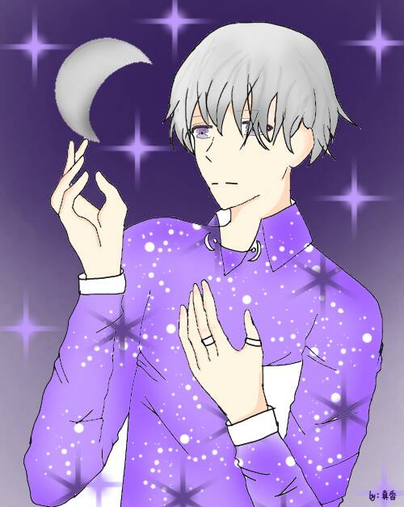

月亮 The Moon
元素水
對應牌2女祭師
對應星座雙魚座
牌義月亮是人類心靈中原始的無意識恐懼，這種求生本能的恐懼記憶儲存在我們的細胞中，
世代相傳，常常會蒙敝我們清明的視線，畫面上，天空高掛一輪月亮。
地上有兩隻因不知月亮是什麼而心生恐懼的狗，對著月亮狂吠，池中的龍蝦正要延著小徑去散步，
對這幅景像感到驚恐，其實並沒有什麼實質的危險，但因狀況的不明，卻有杯弓蛇影的效應，“混沌感”為其特性。
關鍵語潛意識、夢幻、直覺、混亂不清的狀況★暗示該傾聽你的夢，以找到內心世界平靜
牌正面欺騙，有些事物隱而不見，必需去面對潛意識的恐懼。
牌反面固執，沉溺，害怕，恐懼症，重覆未被解決的事情。
試著想像一下自己出現在月亮牌的情景裡面，當你一個人走在黑夜當中，沒有路燈，沒有手電筒，
只能依賴著微弱的月光，既看不清楚前方的路，還不時的聽到一些動物的叫聲，雖然目前還沒有可怕的事物出現在你眼前，
但你依然會感到恐懼、提心吊膽。因為我們依然害怕著在未知的道路上會出現什麼可怕的事物。
自古以來，人類日出而作，日落而息﹔白天陽氣旺，晚上陰氣盛，不是沒有道理的，
月亮還會影響人類的「生理」與「心理」狀態。如:女生每個月的生理期，以及在滿月時，犯罪率和自殺率高漲，精神病也更趨嚴重。
受到水元素的影響，當事人在此段期間也會變得比較脆弱敏感，容易被情緒左右。
月亮牌有兩個較常見的狀況: 一、你面對的恐懼來自於周遭的環境，
可能你正身陷在被親友、同事背叛的狀態，或是被莫名的謠言流言給攻擊，二、你面對的恐懼來自於你的內心，可能你正面對著自己所恐懼的人事物。
離開卡牌